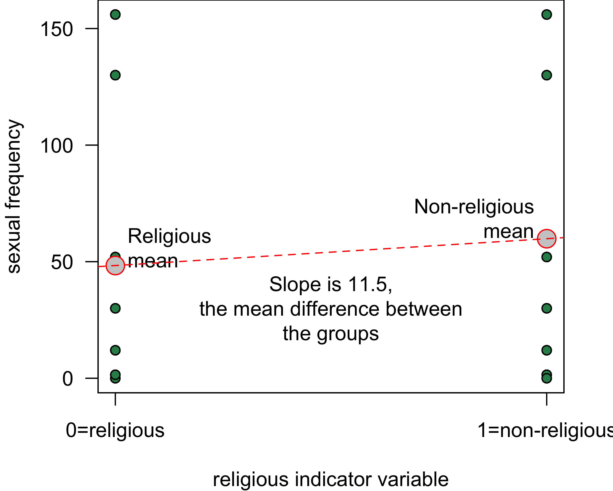
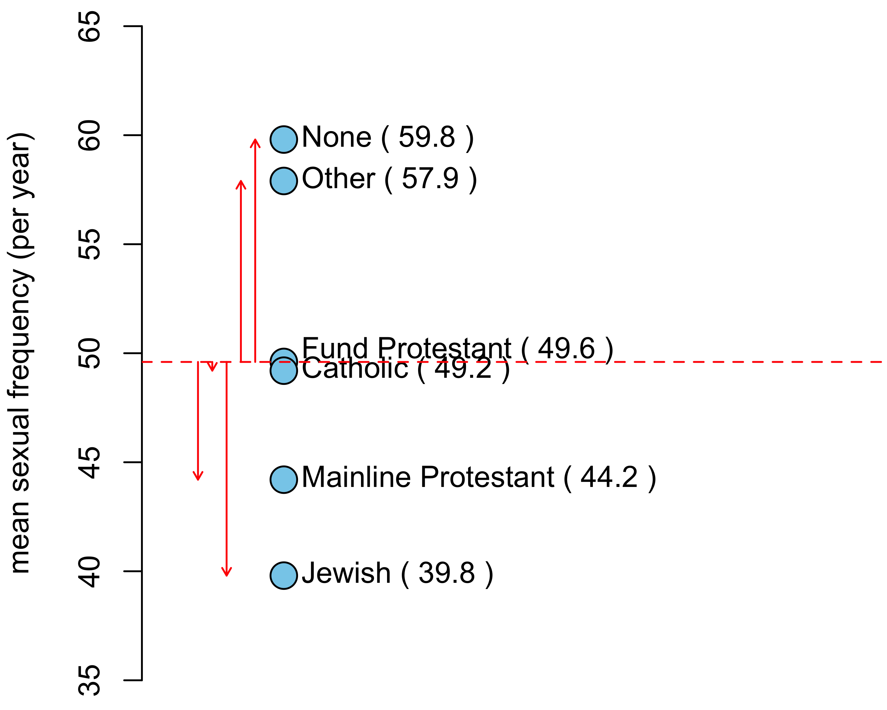

Including Categorical Variables as Predictors
To this point, we only know how to include quantitative variables into OLS regression models. However, it turns out you can use a fairly easy trick to include categorical variables as independent variables in OLS regression models. By including categorical variables as independent variables, we expand considerably the range of things that we can do with OLS regression models. The most difficult part of this trick is correctly interpreting your results.
Indicator variables
As an example, I am going to look at the relationship between religious affiliation and sexual frequency. To keep our example simple I am going to dichotomize the religious affiliation variable, which means I am going to collapse it into two categories, rather than the six categories in the dataset. I will use a simply dichotomy of “Not Religious/Religious.” In R, I can create this variable like so:
sex$norelig <- sex$relig=="None"This is technically a boolean variable, which means it takes a TRUE or FALSE value. For our purposes, TRUE is a non-religious person.
We already know how to look at the relationship between sexual frequency and this dichotomized religious affiliation variable. We can look at the mean differences in sexual frequency across our two categories:
tapply(sex$sexf, sex$norelig, mean)## FALSE TRUE
## 48.33671 59.8486259.84862-48.33671## [1] 11.51191The non-religious have sex 11.5 more times per year than the religious, on average. Hallelujah?
We can represent this same mean difference in a regression model framework by using an indicator variable. An indicator variable is a variable that only takes a value of zero or one. It takes a value of one when the observation is in the indicated category and a zero otherwise. Mathematically, we would say:
\[nonrelig_i=\begin{cases} 1 & \text{if non-religious}\\ 0 & \text{otherwise} \end{cases}\]
The indicated category is the category which gets a one on the indicator variable. In this case the indicated category is non-religious. The reference category is the category that gets no indicator variable. In this case, that is just the religious group. Later on, we will see that this can become slightly more complicated. You can think of the indicator variable as an on/off switch where 1 indicates that it is “on” (i.e. the observation belongs to the indicated category) and 0 indicates that it is “off” (i.e. the observation does not belong to the indicated category).
What would happen if we put this indicator variable into a regression model predicting sexual frequency like so:
\[\hat{frequency}_i=b_0+b_1(nonrelig_i)\]
How would we interpret the slope and intercept for such a model? It might help to look at a scatterplot of this relationship.

Notice that all of the points align vertically either at the 0 or 1 on the x-axis. This is because the indicator variable can only take these two values. In addition, there is a lot of overplotting of these points right on top of one another so it is hard to see the trend. To simplify things I have plotted the means of the two groups in grey dots and the OLS regression line for the scatterplot in red. In order to be the best-fitting line, this OLS regression line must connect those two dots that represent the mean of each group.
What will the slope of this line be? If we go up “one unit” on the non-religious indicator variable we have gone from a religious person to a non-religious person and the change in predicted sexual frequency is equal to the mean difference of 11.5 between the groups. The intercept is given by the value at zero which is just given by the mean sexual frequency among the religious of 48.3. So, the OLS regression line should look like:
\[\hat{frequency}_i=48.3+11.5(nonrelig_i)\]
I can calculate these same numbers in R with the lm command:
coef(lm(sexf~norelig, data=sex))## (Intercept) noreligTRUE
## 48.33671 11.51191The numbers are the same. More important than the numbers, however, is the interpretation of the numbers. The intercept is the mean of the dependent variable for the reference category. The slope is the mean difference between the reference category and the indicated category. In this case, I would say:
- Religious individuals have sex 48.3 times per year, on average.
- Non-religious individuals have sex 11.5 times more per year than non-religious individuals, on average.
Note that I can derive the sexual frequency of the non-religious from these two numbers by taking the value for the non-religious and adding the mean difference to find out that non-religious individuals have sex 59.8 times per year, on average.
Reversing the indicator variable
What if I switched my indicator variable so that the religious were indicated and the non-religious were the reference category?
\[relig_i=\begin{cases} 1 & \text{if religious}\\ 0 & \text{otherwise} \end{cases}\]
Lets try it out in R and see (the != below is computer lingo for “not equal to”):
sex$religious <- sex$relig!="None"
coef(lm(sexf~religious, data=sex))## (Intercept) religiousTRUE
## 59.84862 -11.51191Lets compare the two models:
\[\hat{frequency}_i=48.3+11.5(nonrelig_i)\] \[\hat{frequency}_i=59.8-11.5(relig_i)\]
Both models give me the exact same information, but from the perspective of a different reference group. The first model tells me the mean sexual frequency of the religious (48.3) and how much more sex the non-religious have on average (11.5). The second model tells me the mean sexual frequency of the non-religious (59.8) and how much less sex the religious have (-11.5). I can easily derive one model from the other, without actually having to calculate it in R. Therefore, which category you set as the reference category is really a matter of taste, rather than one of consequence. The results are the same either way.
Categorical variables with more than two categories
What if I have a categorical variable that has more than two categories? Lets expand the religious variable that I dichotomized back to its original scale. There are six different categories: Fundamentalist Protestant, Mainline Protestant, Catholic, Jewish, Other, and None:
summary(sex$relig)## Fund Protestant Mainline Protestant Catholic
## 556 529 507
## Jewish Other None
## 39 145 327Lets look at the mean sexual frequency for each of these groups.
round(tapply(sex$sexf, sex$relig, mean),1)## Fund Protestant Mainline Protestant Catholic
## 49.6 44.2 49.2
## Jewish Other None
## 39.8 57.9 59.8We could plot up these means on a number line to get a visual display of the differences:

Nones and others clearly have much higher mean sexual frequency than the remaining religious groups and Jews have much lower mean sexual frequency. The three Christian groups cluster in the middle, although mainline protestants have a lower mean sexual frequency than the other two.
This plot also shows the mean differences between the groups, with fundamentalist Protestants set as the reference category. The vertical distances from the dotted red line (the mean of fundamentalist Protestants) give the mean differences between each religious group and fundamentalist Protestants. So we can see that “Nones” have sex 10.2 more times per year than fundamentalist Protestants, on average, and mainline Protestants have sex 5.4 fewer times per year, on average, than fundamentalist Protestants.
We can use the same logic of indicator variables we developed above to represent the mean differences between groups observed here in a regression model framework. However, because we now have six categories, we will need five indicator variables. You always need one less indicator variable than the number of categories. The category which doesn’t get an indicator variable is your reference category. As per the graph above, I will make Fundamentalist Protestants my reference category. Therefore, I need one indicator variable for each of the other five categories:
\[main_i=\begin{cases} 1 & \text{if main}\\ 0 & \text{otherwise} \end{cases}\]
\[catholic_i=\begin{cases} 1 & \text{if catholic}\\ 0 & \text{otherwise} \end{cases}\]
\[jewish_i=\begin{cases} 1 & \text{if jewish}\\ 0 & \text{otherwise} \end{cases}\]
\[other_i=\begin{cases} 1 & \text{if other religion}\\ 0 & \text{otherwise} \end{cases}\]
\[none_i=\begin{cases} 1 & \text{if no religion}\\ 0 & \text{otherwise} \end{cases}\]
Now lets put these variables into an OLS regression model:
\[\hat{frequency}_i=b_0+b_1(main_i)+b_2(catholic_i)+b_3(jewish_i)+b_4(other_i)+b_5(none_i)\]
We can figure out how all this works by getting the predicted value for the member of a specific group. That respondent should get a 1 for the variable where they are a member and a zero on all other variables. For example, a fundamentalist protestant should get a zero on all of these variables:
\[\hat{frequency}_i=b_0+b_1(0)+b_2(0)+b_3(0)+b_4(0)+b_5(0)=b_0\]
So, the intercept is the predicted value for fundamentalist Protestants. Similarly we could calculate the predicted value for mainline Protestants:
\[\hat{frequency}_i=b_0+b_1(1)+b_2(0)+b_3(0)+b_4(0)+b_5(0)=b_0+b_1\]
The difference between the two is \(b_1\), so this “slope” gives the mean difference between mainline and fundamentalist Protestants. We could do the same thing for Catholics:
\[\hat{frequency}_i=b_0+b_1(0)+b_2(1)+b_3(0)+b_4(0)+b_5(0)=b_0+b_2\]
The mean difference between Catholics and fundamentalist Protestants is given by \(b_2\).
In general, each of the “slopes” is the mean difference between the indicated category and the reference category. In this case, the reference category is fundamentalist Protestants so each of the slopes gives the mean difference between that religious category and fundamentalist Protestant, just like the graph above.
R is fairly intelligent about handling all of these indicator variables and you don’t actually have to create these five different variables. If you put a categorical variable into your regression formula, R will know to treat it as a set of indicator categories. The only catch is that R will already have a default category set as the reference. It just so happens that in our GSS data, fundamentalist Protestants are already set as the reference. So I can run this model by:
model <- lm(sexf~relig, data=sex)
round(coef(model),2)## (Intercept) religMainline Protestant religCatholic
## 49.60 -5.44 -0.36
## religJewish religOther religNone
## -9.84 8.30 10.25You can tell which category is the reference by which category is left out here. Note how the coefficients (given by the estimates column) match the mean differences I calculated above in the graph. We are simply reproducing these mean differences in a regression model framework.
Categorical and quantitative variables combined in a single model
If all we are doing is reproducing mean differences between categories, what good is this method? After all, we already know how to do that. The major advantage of putting these mean differences into a regression model framework is that we can control for other potentially confounding variables.
These sexual frequency differences by religious affiliation are a prime example. Lets take a look at the age differences between religious affiliations:
round(tapply(sex$age, sex$relig, mean),1)## Fund Protestant Mainline Protestant Catholic
## 45.4 47.3 44.9
## Jewish Other None
## 53.7 38.6 39.5Notice how closely these age differences mirror the differences in sexual frequency. Others and nones are the youngest, while Jews are the oldest. Among Christians, mainline Protestants are older than fundamentalist Protestants and Catholics. We also know from prior work that age has a negative effect on sexual frequency. This should make us suspicious that some (or all) of the observed differences in sexual frequency between religious groups simply reflect age differences between those groups.
We can easily address this issue by simply including age as a control variable in our model:
model <- lm(sexf~relig+age, data=sex)
round(coef(model),2)## (Intercept) religMainline Protestant religCatholic
## 107.90 -3.04 -0.96
## religJewish religOther religNone
## 0.88 -0.43 2.69
## age
## -1.28We now interpret those slopes as the mean difference in sexual frequency between fundamentalist Protestants and the indicated category, among individuals of the same age. So for example, we would interpret the 2.69 on “None” as:
The model predicts that, among individuals of the same age, those with no religious preference have sex 2.69 more times per year than fundamentalist protestants, on average.
We would also interpret the age effect controlling for religious affiliation like so:
The model predicts, that holding religious affiliation constant, a one year increase in age is associated with 1.28 fewer instances of sex per year, on average.
The table below helps to highlight the change in the effects once age is controlled.
| (1) | (2) | |
| Mainline Protestant | -5.44* | -3.04 |
| (3.24) | (2.99) | |
| Catholic | -0.36 | -0.96 |
| (3.28) | (3.02) | |
| Jewish | -9.84 | 0.88 |
| (8.84) | (8.17) | |
| Other | 8.30* | -0.43 |
| (4.98) | (4.61) | |
| None | 10.25*** | 2.69 |
| (3.72) | (3.45) | |
| Age | -1.28*** | |
| (0.07) | ||
| Constant | 49.60*** | 107.90*** |
| (2.26) | (3.68) | |
| Observations | 2,103 | 2,103 |
| R2 | 0.01 | 0.16 |
| Note: | p<0.1; p<0.05; p<0.01 | |
| SE’s in parenthesis. Reference category is fund. Protestant | ||
All of the coefficients (except for Catholic, which was tiny anyway) have declined substantially in size. The mean differences from fundamentalist Protestants for both Jews and other religions have basically disappeared and the “None” effect has been severely reduced. In other words, almost all or all of the observed differences in sexual frequency by religious affiliation were indirectly a product of underlying age differences between religious affiliations. If you were just about ready to convert to a different religion to get laid more often (or less depending on your preferences), you may want to hold off for the moment.